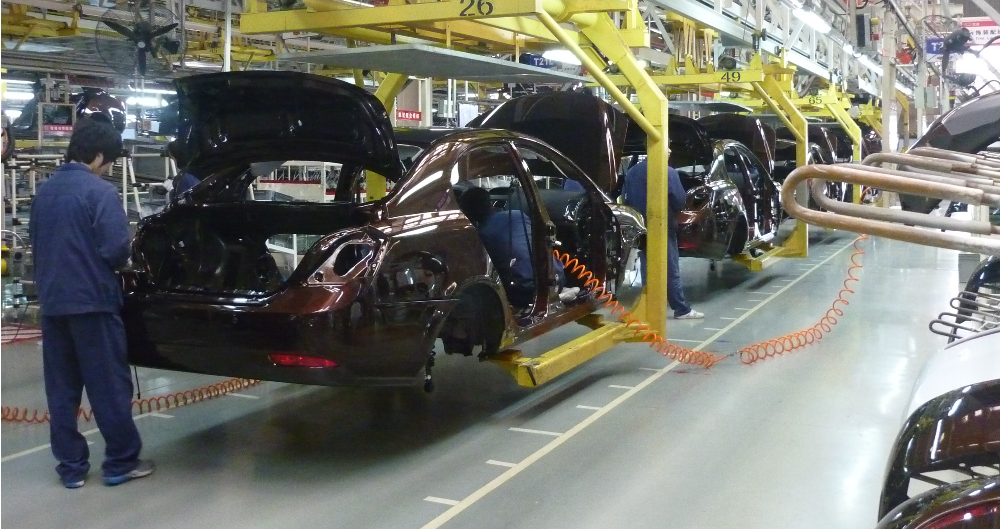
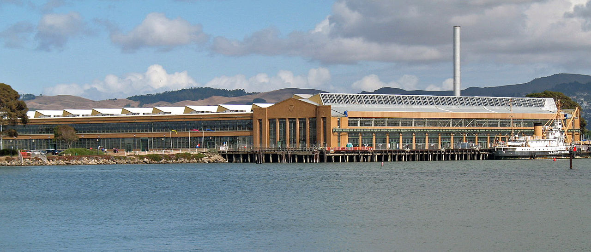
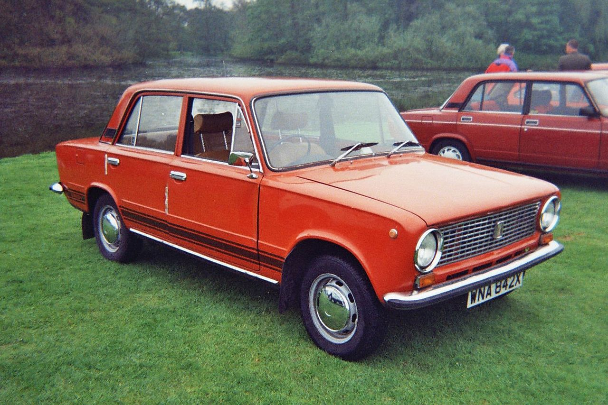
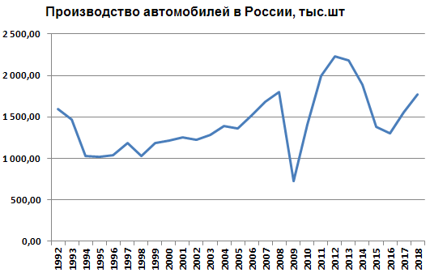

История автомобильной промышленности

Автомобилестроение, как отрасль машиностроения зародилась в 80-х — 90-х годах XIX века во Франции и Германии, а в конце XIX — начале XX веков в Англии, Австро-Венгрии, Италии, США, Бельгии, Канаде, Швейцарии, Швеции и Российской Империи в связи с потребностью в транспортных перевозках и вытеснении из данной области мускульной силы животных и людей. С середины XX века автомобилестроение относится к зрелым отраслям промышленности с высокой степенью монополизации. В 1930-х годах автомобилестроение индустриального типа было создано в СССР. В 1930—1950-е годы практически прекратилось использование продукции деревообрабатывающей промышленности, чьи изделия в кузовостроении были заменены стальными деталями. В 1950-60-х автомобильная промышленность начала интенсивно развиваться в Японии, достаточно активно в Бразилии, Мексике, Аргентине, Испании, и ограниченно в Индии, КНР и ряде других стран. В 1950-х японская фирма Toyota применила основанную на Кайдзен систему гибкой организации производства и повышения качества, известную как «метод Тойоты». С середины 1970-х широкое распространение получили станки с автоматическим управлением (ЧПУ) и автоматизированные производственные линии (особенно на вредных и ответственных участках)с промышленными роботами-манипуляторами. К 1980-м распространение в автопроизводстве получили электронные информационные технологии и логистика, позволившие повысить производительность труда, внедрить систему поставок комплектующих «точно вовремя (канбан)», а также позволившие расширить варианты индивидуальной комплектации автомобилей. В начале 1980-х Япония отобрала звание мирового лидера автомобилестроения у США, а в середине 1980-х началось интенсивное развитие автопроизводства в Южной Корее. В 1990-х — начале 2000-х с помощью ведущих западноевропейских автопроизводителей в некоторых постсоциалистических европейских странах (ФРГ, Чехия и Румыния), автопроизводство было модернизировано (Skoda, Dacia) как и в некоторых странах азиатского региона, прежде всего, в Китае, который 2009 году стал новым мировым лидером автомобилестроения и автопотребления. В то же время, начиная с 1980-х, многие европейские страны (кроме Германии) существенно ослабили свои позиции в мировом автомобилестроении. С 1980-х мировая гегемония Большой тройки концернов-автопроизводителей из США (Дженерал Моторс, Форд, Крайслер) также стала утрачивать монополистические позиции (на рынке Северной Америки), уступая, прежде всего, японским концернам, дополненным, впоследствии, корейскими и немецкими. Как крупнейшие, так и менее крупные автопроизводители многократно объединялись (а также расходились) с другими концернами и консорциумами, и все более активно размещали и размещают свои производства в третьих странах (прежде всего в Китае). В конце XX века широкую известность приобрели конкурсы легковых, а затем и грузовых машин «автомобиль года» сначала европейского, а затем японского и североамериканского рынков, а также всемирный и международный легковых (англ.) и грузовых машин, на которых победы попеременно одерживали автомобили разных классов, производителей и стран. Также был проведён конкурс «автомобиль века» на котором победил Ford T (1908—1926). С началом 1980-х годов отмечается всё возрастающее использование изделий электронной промышленности — систем управления двигателями, коробками передач и трансмиссией, систем пассивной (преднатяжителей и компенсаторов натяжения ремней безопасности, подушек и шторок безопасности, активных подголовников, систем спутниковой аварийной сигнализации) и активной безопасности (АБС тормозов, брейкассистеров, противозаносных систем и т. д.), активных светотехнических систем, радаров и сонаров, датчиков давления воздуха в шинах, гарнитур мобильной связи «хэнд-фри», также бортовых компьютеров, диагностических и навигационных систем, а в последнее время и автомобильных персональных компьютеров.
Сборочные цеха Ford Motor Company К наиболее важным тенденциям мирового автомобилестроения в начале XXI века можно отнести особое внимание к улучшению экологических и экономических показателей ДВС (каталитические конвертеры и дизели нового поколения, новые типы топлив, включая биотопливо), создание гибридных систем (ДВС+электромотор+аккумулятор), повышению уровня безопасности (см. выше), улучшению ходовых качеств (полный привод, электронные системы помощи вождению), «интеллектуализации» автомобиля в целом. Во втором десятилетии XXI века усилилась тенденция создания гибридных и полностью электромобиль, особенно в США (Tesla и компании Большой тройки) и Китае, например, фирма BYD. В Китае объем выпуска гибридов (HEV), подзаряжаемых (от сети) гибридов (PHEV) и электромобилей (EV) вырос за 2014—2016 гг. примерно четырехкратно — до 507 тыс. из которых 409 тыс. электромобили и 98 тыс. — гибриды. На 2020 год китайское правительство намечает достижение уровня производства транспортных средств на альтернативной энергии на уровне 3 млн в год при росте общего объема производства в 30 млн автомобилей. К 2025 году Китай намечает занять лидирующую позицию на всех мировых автомобильных рынках. Важной проблемой мирового масштаба сегодня стала проблема утилизации и переработки вышедших из употребления автомобилей. В ряде государств приняты сегодня нормы, директивы и законы, требующие от производителей, в целях регулирования процессов переработки, полной информированности по части используемых ими материалов. Важным шагом к реализации этих законов и норм было создание единой международной информационной системы IMDS. Сегодня членами IMDS являются более 20-и представителей мирового автопрома.Автомобильная промышленность в СССР
До революции
Первый российский автомобиль с ДВС был построен и публично продемонстрирован в 1896 году Евгением Яковлевым
и Петром Фрезе. Впоследствии в России появился ряд частных автофирм, из которых наиболее крупными и
оснащёнными были: фабрика Яковлев П.Д. (1790—1911)[1], Руссо-балт (Русско-Балтийский, РБВЗ) (1909—1918) и
Пузырёв (РАЗИПП) (1911—1914).
Однако, первые серьёзные усилия по созданию национального автомобилестроения русское правительство предприняло уже в разгар Первой мировой войны, когда в 1916 году были выделены казённые средства для строительства шести автомобильных заводов.
Советские годы
Первый полностью советский автомобиль АМО-Ф-15 был произведён заводом АМО в 1924. С этого момента начинается развитие советского автомобилестроения. В 1931—1933 гг. предприятие АМО было реконструировано и, переименованное в ЗИС, выпускало грузовики по лицензии американской фирмы Autocar, а в Горьком в 1930—1932 было построено предприятие ГАЗ, выпускавшее легковые и грузовые автомобили по лицензии фирмы Ford Motor. Оба предприятия, построенные в ходе индустриализации, стали основой национального автомобилестроения и вместе с менее крупными предприятиями обеспечили к 1938 году выход СССР на первое место в Европе и второе в мире по выпуску грузовиков. До Великой Отечественной войны автомобильная промышленность СССР произвела свыше 1 млн автомобилей, значительная часть которых поступила в РККА.
Во время Великой Отечественной войны автозавод ЗИС был эвакуирован в тыл, где на базе его оборудования были созданы новые автомобилестроительные предприятия УльЗИС и УралЗИС. В годы войны получила распространение сборка автомобилей из машино-комплектов, поставлявшихся по ленд-лизу. В 1950—1970-е годы развитие советского автомобилестроения продолжалось экстенсивными методами, причём до начала 70-х основной приоритет отдавался грузовым автомобилям, в частности, армейским многоосным тягачам и полноприводным грузовикам двойного назначения. Массовая автомобилизация СССР началась со строительством Италией под ключ в 1966—1970 гг. Волжского автомобильного завода (ВАЗ) в Тольятти и развёртыванием массового выпуска на его мощностях (660—730 тыс.) легковых автомобилей марок Жигули и Нива первых внедорожников, что стало достаточно передовым и для Европы. Также с нуля появилось достаточно крупное производство легковых автомобилей ИжАвто преимущественно с новым типом кузова хэтчбек. В 1976 году в строй вошёл крупнейший в Европе завод грузовых автомобилей КамАЗ, строительство которого было начато в 1969 году. С его вводом доля дизельных автомобилей в грузовом парке СССР возросла с 7-8 % до 25 %. Было положено начало дизелизации ряда других советских автомарок. К 1980-м гг. советское автомобилестроение добилось очевидных успехов в массовом производстве: по общему автопроизводству (по 2,2 млн в 1985 и 1986 годах) СССР занял пятое место в мире, уступая только Японии, США, ФРГ и Франции), по производству грузовиков — третье место, по производству автобусов — первое место. В 1980-х были освоены принципиально новые переднеприводные легковые модели с кузовами хэтчбек и подготовлено массовое производство дизельных среднетоннажных грузовиков и автобусов. Однако, одновременно стали проявляться кризисные явления, типичные для эпохи застоя: фактически прекратился рост производства легковых автомобилей (стабилизировался на 1,3 млн в год), при этом их доля составила немного более половины от всего автопроизводства (что намного меньше чем в развитых странах), чрезмерно затягивались НИОКР, оставалось низким качество комплектующих и сборки, сохранялся устойчивый дефицит запчастей. С распадом СССР в 1991 году советское автомобилестроение, сконцентрированное преимущественно в России, Белоруссии и Украине, распалось на национальные автомобильные промышленности, судьба которых сложилась по-разному.Постсоветская Россия
С началом рыночных реформ в 1992 году, автомобилестроение России попало в полосу затяжного кризиса. К середине 90-х выпуск грузовых автомобилей сократился в 5,5 раз, автобусов большого класса в 10 раз, легковых автомобилей на треть. Кардинальное обновление производственных программ российских автозаводов оказалось практически невозможным из-за слабой финансовой системы (дороговизна кредитов) и чрезмерного давления на производство расходов по социальной сфере, доставшейся автопрому со времен СССР, а также морального старения и физического износа оказавшихся избыточными производственных мощностей. В результате остановились даже заводы АЗЛК и ИЖ, выпускавшие по 150 тысяч и свыше более или менее востребованных рынком недорогих легковых автомобилей. В то же время, лидеры отрасли АВТОВАЗ, ГАЗ и АМО ЗИЛ смогли выпустить в 90-х новые модели, позволившие им пережить наиболее тяжёлую фазу кризиса. После дефолта 1998 года российский автопром, как и все отечественные производители, получил кратковременную передышку, были освоены новые модели, но негативная тенденция сокращения доли рынка у отечественных производителей сохранилась. Большая часть российских автомобильных и моторных заводов была объединена в первой половине 2000-х в холдинги «Руспромавто» (ныне «Группа ГАЗ») и «Северсталь-авто» (ныне «Соллерс»).
Начиная с 2002 года в России нарастает сборка иномарок (в 2008году — 618,2 тыс., в 2016-м — 848,4 тыс.). В июне 2011 г. соглашение о расширении локализации производства в России и других принципах сотрудничества с иностранными компаниями[2] было подписано Правительством РФ и компаниями Sollers-Ford, Volkswagen, General Motors и консорциум компаний АвтоВАЗ, Renault-Nissan, «ИжАвто» — ОАГ (ныне «LADA-Ижевск») и КамАЗ[3]. С массовым открытием сборочных предприятий иностранных компаний, начиная с 2009 года их доля в национальном производстве должна была быстро расти, но из-за кризисов в 2009—2010 гг. и в 2015—2016 гг. темп роста оказался не столь быстрым. Так, в 2016 году доля производства иностранных моделей составила в сегменте легковых автомобилей 73,4 %, в сегменте автобусов 21,7 % и в сегменте грузовиков 10,1 %. В целях стимулирования российского автопрома в 2010 году в России была запущена программа по обмену старых автомобилей на новые: при сдаче в утилизацию автомобиля старше 10 лет потребитель получит сертификат номиналом 50 тысяч рублей, который засчитывается при приобретении нового отечественного автомобиля, включая машины, производимые в режиме «промышленной сборки»[4]. В результате осуществления программы утилизации в 2010 году только за неё счёт было реализовано дополнительно 376 тыс. автомобилей, а рынок в целом вырос до 1,91 млн легковых и лёгких развозных коммерческих автомобилей, что на 30 % превысило показатель 2009 года.[5] Россия входит в число 15-ти крупнейших автопроизводителей. В 2008 году российский автопром (по данным ОАО АСМ-холдинг и OICA) произвёл 1,79 млн автомобилей (+7,4 % к 2007 году).[6], в том числе произведено 1,471 млн легковых автомобилей и 256 тыс. грузовых автомобилей[7]. В том же году из России было экспортировано 132 тыс. легковых и 45 тыс. грузовых автомобилей на общую сумму 1,7 млрд долларов[8]. В связи с экономическим кризисом 2008—2010 производство резко снизилось до 0,72 млн в 2009 г. и восстановилось до 1,403 млн в 2010 г. по данным OICA[9]. За первое полугодие 2011 года производство выросло ещё на 76 %. Доля на российском рынке автомобилей, собранных в России, увеличилась с 50 % в 2009 г. до 70 % в 2011 г. Согласно заявлению премьер-министра в сентябре 2011 года, планируется, что к 2016 году Россия станет крупнейшим в Европе центром по производству автомобилей[3], что должно подразумевать годовой выпуск, больший чем в последние годы не только в Испании и Франции (2,3-3,5 млн), но и в Германии (5,5-5,9 млн). Фактический объем производства в России в 2016 году по данным ОАО АСМ-холдинг составил только 1,304 млн автомобилей (-5,4 % к 2015 году). Доля собранных в России автомобилей увеличилась к 2016 году до 79 % по легковым, до 83,1 % по грузовым и до 95,1 % по автобусам.Мировое производство автотранспорта
В первом десятилетии XXI века наиболее бурными темпами развивается автомобилестроение Китая, Бразилии, Мексики за счёт лидирующего положения по объёмам привлечения иностранного капитала и активной антикризисной налоговой, и кредитной поддержки государства. В 2010 году производство в Китае выросло на 32,4 % по сравнению с 2009 годом и достигло 18,26 млн автомобилей, включая 11,6 млн легковых автомобилей, что позволило сохранить второй год подряд и упрочить первое место в мире (в том числе и по продажам легковых автомобилей), очень значительно опередив лидеров (США и Японию), сменявших друг друга в прошлые десятилетия, а также опередив все страны Евросоюза вместе взятые. В 2000—2010 годы производство автомобилей в Бразилии возросло с 1,7 млн шт. до 3,6 млн шт. в год после начала опеки государства над автопроизводителями. После выхода на мировой рынок Мексика сделала небольшой скачок и поднялась вверх по экспорту автомобильных товаров. Предполагалось, что в 2011 году автопром Китая вырастет ещё на 10-15 % и впервые в мировой истории автопроизводства для какой-либо страны сможет превысить планку производства в 20 млн автомобилей.Кризис и мировой автопром
С началом мирового финансового кризиса в 2008 году мировое автомобилестроение, за исключением китайского, оказалось в числе самых депрессивных отраслей глобальной экономики[10]. Концерны GM и Chrysler были вынуждены уже осенью 2008 года обратиться к правительству США за многомиллиардными кредитами, без которых их выживание стало практически невозможным[11]. Аналогичные кредитные запросы к своим национальным правительствам предъявили и автопроизводители Европы[12] и России[13]. По оценке PricewaterhouseCoopers в 2009 году спад мирового автопроизводства может составить 14 % (55 млн). В начале 2010-х годов вследствие мирового финансового кризиса в мировом автомобилестроении началась уверенная смена стран-лидеров, в особенности в отношении ранее первенствовавшего американского автопрома, представленного Большой тройкой. Причём, на собственном рынке Большая тройка впервые была потеснена ещё в начале 1980-х японским автопромом, представленным компаниями Toyota, Nissan, Honda, Mitsubishi и т. д., а в конце 20 века на мировом рынке активно развернулись и европейскими автопроизводители, включая концерны Volkswagen Group, Daimler, BMW, Renault, PSA Peugeot Citroën, FIAT и т. д. Суммарный объём производства автомобилей в мире за 2009 год составил 61,7 млн (-12,8 % к 2008 году)[14]. В 2010 году мировой автопром начал выходить из рецессии, так продажи возросли предварительно до 68,5-70 млн автомобилей против 51,3 млн в 2009-м. В 2017 году в мире произвели 73,5 миллиона пассажирских автомобилей и 23,9 миллиона грузовиков[15]. В результате землетрясения и последовавшего за ним цунами 2011 года в Японии на некоторое время останавливались, из-за возникшего энергетического дефицита, сборочные линии автозаводов. Также был приостановлен экспорт японских автомобилей и запчастей из-за закрытия основных морских портов в стране[16]. В итоге это привело к тому что Тойота, бывшая лидером мирового автопрома, по итогам года откатилась на третью позицию (первые места заняли General Motors и Volkswagen group). Автопроизводство в Европе тоже страдает из-за рецессии. За период с 2009 по 2013 гг. было закрыто 8 заводов. В 2013 г. 32 % мощностей заводов по производству автомобилей остались незадействованными.[17]Скандалы
При конвейерном производстве машин обойтись без каких-либо дефектов практически невозможно. Регулярно производителям приходится делать отзывы автомобилей из торговли и у потребителей, для устранения критических недоработок. Первыми отзывы начали проводить американские фирмы. Крупнейшие отзывы: Ford Motor (2001, 22 млн автомобилей, дефект в системе зажигания); Toyota (2012, 7,43 млн автомобилей, дефект электростеклоподъемника[18]); Volkswagen (2015, 8,5 млн автомобилей, ПО с «экологическим дефектом»); дефектные подушки безопасности Takata (2015, 34 млн автомобилей Honda, BMW, Fiat, Mazda, Mitsubishi, Nissan, Subaru, Toyota, Chrysler, General Motors).[19]. *Также АвтоВАЗ#Отзыв продукции. Афера концерна Volkswagen (Дизельгейт, 2015)Список стран лидеров по производству автотранспортных средств за последние годы
Таблица государств отсортирована по количеству выпускаемых автомобильной промышленностью автомобилей в тысячах единиц, в порядке убывания. Список основан на данных OICA c 2000 года.| Страна | 2018 | 2017 | 2016 | 2015 | 2014 |
|---|---|---|---|---|---|
| Китай | 27 809 | 29 015 | 28 119 | 24 503 | 23 723 |
| США | 11 315 | 11 190 | 12 198 | 12 100 | 11 661 |
| Япония | 9 729 | 9 694 | 9 205 | 9 278 | 9 775 |
| Индия | 5 175 | 4 792 | 4 489 | 4 161 | 3 840 |
| Германия | 5 120 | 5 646 | 6 063 | 6 033 | 5 908 |